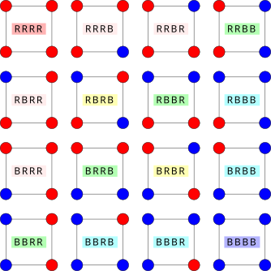
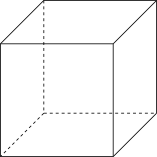

OI Wiki · prijevod · MatematikaOI Wiki · translation · Mathematics
Pólyino prebrojavanjePólya enumeration
Sadržaj
Preduvjeti: Permutacije
Uvod
Pólyin teorem prebrojavanja (Pólya enumeration theorem) obično se koristi za rješavanje zadataka prebrojavanja u kojima se pojavljuje pojam „bitno različit”.
Ovaj članak može dotaknuti sadržaj iz teorije grupa
Ovaj članak može dotaknuti sadržaj iz teorije grupa. U njemu ćemo pojmove iz teorije grupa koji se pojavljuju kratko objasniti kako bi čitatelji koji nisu upoznati s tim gradivom mogli razumjeti i primijeniti Pólyin teorem prebrojavanja. Za sadržaj iz teorije grupa, strogu formulaciju i raspravu pogledajte poglavlja Osnovni pojmovi apstraktne algebre, Teorija grupa i dr.
„Grupa simetrija”, „simetrična grupa” i „grupa permutacija”
U ovom će se članku neizbježno istodobno koristiti imena ovih triju vrsta grupa. Iako ih je lako pobrkati, ona doista označavaju različite pojmove. Za zadanu geometrijsku strukturu operacije simetrije na njoj jesu geometrijske transformacije koje je preslikavaju na samu sebe, a grupa simetrija (symmetry group) skup je tih operacija simetrije. Simetrična grupa (symmetric group) skup je svih permutacija zadanog skupa. Grupa permutacija (permutation group) pak je podgrupa simetrične grupe, tj. grupa koju čine neke (ne nužno sve) permutacije. U nastavku ćemo objasniti kako grupu simetrija zadane geometrijske strukture prikazati u obliku grupe permutacija i upotrijebiti je u zadacima prebrojavanja.
Burnsideova lema
Povezano štivo: Burnsideova lema
Pólyin teorem prebrojavanja primjena je i poopćenje Burnsideove leme. Prije uvođenja Pólyina teorema prebrojavanja potrebno je kratko ponoviti sadržaj Burnsideove leme.
Da bismo došli do općeg pravila, najprije razmotrimo jednostavan primjer.
Bojenje ogrlice
Imamo ogrlicu s ukupno četiri perle, a svaka perla može biti crvena ili plava. Izračunajte koliko ima bitno različitih ogrlica. (Ako se dva bojenja mogu dovesti do podudaranja rotacijom ogrlice, smatramo ih jednakima.)
Rješenje i analiza
Ovaj je zadatak dovoljno jednostavan da ga možemo riješiti nabrajanjem. Perli ima ukupno \(4\), a svaka se može obojiti u \(2\) boje, pa svih mogućih bojenja ogrlice ima ukupno \(2^4=16\). Grupiramo li u istu skupinu bojenja koja se rotacijom mogu dobiti jedno iz drugoga, dobivamo ukupno \(6\) skupina, kao na slici dolje. (Pritom kôd pojedinog bojenja označava boje redom u smjeru kazaljke na satu počevši od perle u donjem lijevom kutu, \(B\) označava plavu, a \(R\) crvenu; kodovi bojenja koja pripadaju istoj skupini imaju istu boju pozadine.)

Iz ovog se primjera vidi da je za izračun broja bitno različitih bojenja ključno zapravo znati koliko različitih bojenja odgovara svakom bitno jednakom bojenju. Drugim riječima, treba utvrditi veličinu svake skupine na gornjoj slici.
Bojenja koja se mogu svrstati u istu skupinu upravo su ona bojenja koja se rotacijama mogu pretvoriti jedno u drugo. Ukupno postoje \(4\) načina rotacije, tj.
koji redom označavaju rotaciju za \(0,1,2,3\) koraka. Rotacija za \(0\) koraka znači da se ništa ne mijenja.
Pogledajmo najprije skupinu kojoj pripada bojenje \(RRBB\). Primijenimo li na njega ove četiri operacije, redom dobivamo
Ova su četiri bojenja međusobno različita, pa ta skupina ima \(4\) elementa.
Pogledajmo zatim skupinu kojoj pripada bojenje \(BRBR\). Primijenimo li na njega iste četiri operacije, redom dobivamo
Ovdje je rezultat rotacije za dva koraka jednak rezultatu bez rotacije, a rezultat rotacije za tri koraka jednak rezultatu rotacije za jedan korak. Stoga ta skupina ima \(2\) elementa.
Na kraju pogledajmo skupine kojima pripadaju bojenja \(BBBB\) i \(RRRR\). Primjenom četiriju operacija na njih dobivamo uvijek njih same. Zato svaka od tih skupina ima samo \(1\) element.
Označimo li s \(x\) bojenje, a s \(Gx\) skup kodova boja koji se mogu dobiti primjenom operacija na bojenje \(x\), iz gornjeg se primjera može izvući pravilo: utjecaj operacija iz \(G\) na \(x\) ima neku vrstu „periodičnosti”.
Neka \(|G|\) označava ukupan broj operacija. Ta „periodičnost” utjecaja znači: ako \(m\) različitih operacija iz \(G\) preslikava bojenje \(x\) u njega samo, tada se rezultati primjene tih operacija na \(x\) ponavljaju po \(m\) puta. Zato bojenje \(x\) pod tim operacijama daje ukupno \(|G|/m\) različitih rezultata, a to je upravo veličina skupine kojoj \(x\) pripada.
U ovom primjeru samo rotacija za nula koraka \(r_0\) preslikava \(RRBB\) u njega samo, pa je veličina njegove skupine jednaka \(4/1=4\); rotacija za nula koraka \(r_0\) i rotacija za dva koraka \(r_2\) obje preslikavaju \(BRBR\) u njega samo, pa je veličina njegove skupine jednaka \(4/2=2\); bez obzira na broj koraka rotacije \(BBBB\) se preslikava u njega samo, pa je veličina njegove skupine \(4/4=1\).
U daljnjem izlaganju s \(G_x\) označavamo skup operacija koje preslikavaju \(x\) u njega samo, pa je \(|G_x|\) upravo gornji \(m\). Tada je veličina skupine kojoj pripada \(x\) jednaka \(|G|/|G_x|\). Da bismo izračunali broj skupina bojenja, dovoljno je proći kroz sva moguća bojenja \(x\in X\) i bojenju \(x\) čija skupina ima veličinu \(|Gx|\) pridružiti težinu \(1/|Gx|\); tako broj skupina možemo izraziti kao
Ovaj oblik izraza nije pogodan za primjenu. Označimo s \(gx\) rezultat primjene operacije \(g\in G\) na bojenje \(x\in X\); tada je gore opisani skup \(G_x\) upravo \(\{g\in G:gx=x\}\), pa zamjenom redoslijeda zbrajanja dobivamo
Ovdje je \([\cdot]\) Iversonova zagrada. U rezultatu zamjene redoslijeda zbrajanja \(X^g=\{x\in X:gx=x\}\) označava skup bojenja \(x\) koja ostaju nepromijenjena pod operacijom \(g\). Ukratko, to su fiksne točke operacije \(g\).
Nakon ovih razmatranja broj skupina sada možemo zapisati kao
Drugim riječima, broj skupina jednak je prosječnom broju fiksnih točaka svih rotacija.
Kao primjenu ovog rezultata ponovno izračunajmo broj bojenja ogrlice. Fiksne točke rotacija možemo popisati ovako.
| Operacija | Fiksne točke |
|---|---|
| \(r_0\) | \(X\) |
| \(r_1\) | \(\{BBBB,RRRR\}\) |
| \(r_2\) | \(\{BBBB,BRBR,RBRB,RRRR\}\) |
| \(r_3\) | \(\{BBBB,RRRR\}\) |
Stoga je broj skupina jednak
Tako smo dobili prijašnji rezultat.
Iz ovog primjera može se izvesti opći rezultat za rješavanje ovakvih zadataka prebrojavanja. Radi lakše rasprave u ovom članku promatramo situaciju zadatka bojenja; naravno, sve se može primijeniti i na druge situacije, a odgovarajući primjeri dani su u nastavku.
Zadatak bojenja glasi: zadana je neka struktura i bojenjem svakog njezina objekta koji se može obojiti (npr. elementa, vrha, brida itd.) dobivaju se različita bojenja. Ta struktura ima neku simetriju, zbog koje se naizgled različita bojenja nakon niza operacija simetrije mogu pretvoriti jedno u drugo. Bojenja koja se mogu pretvoriti jedno u drugo nazivamo bitno jednakima. Zadatak je odrediti broj bitno različitih bojenja.
Prema analizi iz primjera, za rješavanje ovakvog zadatka najprije treba razmotriti koje sve operacije simetrije zadana struktura ima. Skup \(G\) tih operacija simetrije naziva se grupom simetrija zadane strukture. U praktičnim primjenama većinom nije potrebno poznavati definiciju grupe; dovoljno je moći bez ponavljanja i bez propuštanja razmotriti sve operacije simetrije. U nastavku članka analizirana je struktura nekoliko uobičajenih grupa simetrija, a ondje je objašnjena i definicija grupe.
Skup svih bojenja označavamo s \(X\), a pojedino bojenje u njemu s \(x\). Rezultat djelovanja operacije \(g\in G\) na bojenje \(x\in X\) jest \(gx\). Tada je skup svih rezultata koji se mogu dobiti djelovanjem neke operacije na bojenje \(x\) jednak \(Gx=\{gx:g\in G\}\) i naziva se orbitom od \(x\) pod djelovanjem grupe \(G\). Različita bojenja u istoj orbiti upravo su ona koja se u ovakvim zadacima nazivaju „bitno jednakima”. Stoga je broj svih bitno različitih bojenja jednak broju različitih orbita.
Analiza iz primjera može se poopćiti na opći slučaj.
Burnsideova lema
Za zadano djelovanje grupe \(G\) na skupu \(X\) broj svih različitih orbita jednak je
Ovdje je \(X^g=\{x\in X:gx=x\}\) skup fiksnih točaka pod djelovanjem \(g\in G\).
Njezin dokaz gotovo doslovno ponavlja analizu iz gornjeg primjera. No u primjeru smo upotrijebili opažanje da rezultat djelovanja grupe \(G\) na pojedini element \(x\) ima neku „periodičnost”, pa je broj ponavljanja tog perioda jednak broju operacija koje preslikavaju \(x\) u njega samog. To je opažanje točno i u općem slučaju, ali budući da struktura grupe \(G\) može biti vrlo složena, njezina „periodičnost” nije nužno tako izravna kao u primjeru. Za strogu formulaciju tog opažanja potreban je teorem o orbiti i stabilizatoru (orbit-stabilizer theorem) iz teorije grupa.
U primjenama je dovoljno nabrojiti sve operacije simetrije i za svaku navesti broj fiksnih točaka da bi se riješio odgovarajući zadatak prebrojavanja. Slijedi nešto složenija primjena.
Bojenje kocke
Kocku bojimo trima bojama. Odredite broj bitno različitih bojenja (dva bojenja koja se nakon rotacije u prostoru podudaraju smatraju se jednakima).
Rješenje
Budući da kocka ima \(6\) strana, a svaka se strana može obojiti na \(3\) načina, ukupno ima \(3^6\) bojenja, tj. \(|X|=3^6\). Grupu simetrija kocke označimo s \(G\).

Zatim trebamo analizirati sve operacije iz \(G\); mogu se podijeliti u sljedeće vrste (radi jednostavnosti šest strana kocke nazivamo prednja, stražnja, gornja, donja, lijeva i desna):
- Mirovanje, tj. identiteta: budući da sva bojenja pod identitetom ostaju nepromijenjena, njoj odgovara \(|X^g|=3^6\);
- Rotacija za \(90^\circ\) oko osi kroz središta dviju nasuprotnih strana: par nasuprotnih strana može se odabrati na \(3\) načina, a smjer rotacije na \(2\) načina, pa ova vrsta sadrži ukupno \(6\) permutacija. Odaberemo li za os spojnicu središta prednje i stražnje strane, gornja, donja, lijeva i desna strana moraju biti iste boje da bi bojenje ostalo nepromijenjeno nakon rotacije. Tada postoje \(3\) područja koja se mogu neovisno obojiti, pa joj odgovara \(|X^g|=3^3\);
- Rotacija za \(180^\circ\) oko osi kroz središta dviju nasuprotnih strana: par nasuprotnih strana može se odabrati na \(3\) načina, a izbor smjera rotacije nema utjecaja, pa ova vrsta sadrži ukupno \(3\) permutacije. Odaberemo li za os spojnicu središta prednje i stražnje strane, gornja i donja strana moraju biti iste boje te lijeva i desna strana moraju biti iste boje da bi bojenje ostalo nepromijenjeno nakon rotacije. Tada postoje \(4\) područja koja se mogu neovisno obojiti, pa joj odgovara \(|X^g|=3^4\);
- Rotacija za \(180^\circ\) oko osi kroz polovišta dvaju nasuprotnih bridova: par nasuprotnih bridova može se odabrati na \(6\) načina, a smjer rotacije i dalje nema utjecaja na permutaciju, pa ova vrsta sadrži ukupno \(6\) permutacija. Odaberemo li za nasuprotne bridove zajednički brid prednje i gornje strane te zajednički brid donje i stražnje strane, prednja i gornja strana moraju biti iste boje, donja i stražnja strana iste boje te lijeva i desna strana iste boje da bi bojenje ostalo nepromijenjeno nakon rotacije. Tada postoje \(3\) područja koja se mogu neovisno obojiti, pa joj odgovara \(|X^g|=3^3\);
- Rotacija za \(120^\circ\) oko osi kroz dva nasuprotna vrha: par nasuprotnih vrhova može se odabrati na \(4\) načina, a smjer rotacije na \(2\) načina, pa ova vrsta sadrži ukupno \(8\) permutacija. Odaberemo li za nasuprotne vrhove gornji desni vrh prednje strane i donji lijevi vrh stražnje strane, prednja, gornja i desna strana moraju biti iste boje te stražnja, donja i lijeva strana iste boje da bi bojenje ostalo nepromijenjeno nakon rotacije. Tada postoje \(2\) područja koja se mogu neovisno obojiti, pa joj odgovara \(|X^g|=3^2\).
Stoga je broj svih bitno različitih bojenja
Pólyin teorem prebrojavanja
U iskazu Burnsideove leme nigdje se ne koristi svojstvo da je skup \(X\) skup svih bojenja neke strukture. Zapravo, područje primjene Burnsideove leme nije ograničeno na zadatke prebrojavanja bojenja. Za zadatke prebrojavanja bojenja Pólyin teorem prebrojavanja daje konkretniju metodu računanja. Može se smatrati primjenom opće Burnsideove leme na zadatke prebrojavanja bojenja.
U odnosu na Burnsideovu lemu, poboljšanje koje donosi Pólyin teorem prebrojavanja jest konkretna metoda računanja veličine skupa fiksnih točaka \(|X^g|\) u zadacima prebrojavanja bojenja.
To se zorno vidi iz gornjeg primjera bojenja kocke. Za sve operacije simetrije kocke veličina skupa fiksnih točaka oblika je \(m^{c(g)}\), gdje je \(m\) broj boja, a \(c(g)\) broj područja koja se pod operacijom \(g\) mogu neovisno obojiti. To opažanje vrijedi i u općem slučaju, ali treba dodatno razjasniti kako za zadani \(g\) izračunati vrijednost \(c(g)\).
Odabir bojenja neke strukture, izražen matematičkim jezikom, odabir je preslikavanja \(f:X\rightarrow C\) iz skupa \(X\) objekata te strukture koji se mogu obojiti (npr. perli ogrlice, strana kocke itd.) u skup boja \(C\). Stoga je skup bojenja upravo \(C^X\). Grupa simetrija \(G\) te strukture djeluje na strukturi, a time prirodno djeluje i na skupu \(X\). Takva operacija simetrije uvijek odgovara bijekciji skupa \(X\), tj. permutaciji (permutation).1
Analizirajmo sada strukturu skupa fiksnih točaka \((C^X)^g\). Za zadani \(g\), shvaćen kao permutacija skupa \(X\), po uzoru na analizu iz primjera znamo: ako se pozicija \(x\) iz \(X\) nakon konačno mnogo ponavljanja operacije \(g\) može premjestiti na poziciju \(y\), tada fiksna točka \(f\in (C^X)^g\) nužno mora zadovoljavati \(f(x)=f(y)\). Jezikom orbita iz prethodnog odjeljka: budući da se pozicije \(x\) i \(y\) nalaze u istoj orbiti djelovanja2 operacije \(g\), moraju biti obojene istom bojom. Jezikom permutacija: u rastavu na cikluse permutacije \(g\) pozicije \(x\) i \(y\) nalaze se u istom ciklusu, pa moraju biti obojene istom bojom. Različiti ciklusi u rastavu na cikluse ne moraju biti obojeni jednako, mogu se bojiti neovisno, pa je broj područja koja se mogu neovisno obojiti upravo \(c(g)\), tj. broj ciklusa u rastavu permutacije \(g\) na cikluse.
Prema tome, broj fiksnih točaka operacije \(g\) jednak je \(|C|^{c(g)}\). Uvrstimo li taj zaključak u Burnsideovu lemu, dobivamo netežinsku inačicu Pólyina teorema prebrojavanja (Pólya enumeration theorem).
Pólyin teorem prebrojavanja (netežinska inačica)
Za zadano djelovanje grupe \(G\) na skupu \(X\) i skup boja \(C\) broj različitih bojenja jednak je
gdje je \(m\) broj boja, a \(c(g)\) broj ciklusa u rastavu na cikluse permutacijskog prikaza elementa \(g\in G\).
O značenju grupe \(G\)
Ovdje se oznake ponešto zloupotrebljavaju. Ako grupa \(G\) djeluje na \(X\), djelovanje grupe na skupu bojenja \(C^X\) zapravo treba iznova definirati; ovdje to ne razlikujemo.
Kao jednostavnu primjenu Pólyina teorema prebrojavanja, u nastavku ponovno računamo prijašnje primjere pomoću Pólyina teorema prebrojavanja.
Drugo rješenje zadatka bojenja ogrlice
Označimo četiri perle brojevima \(1\sim 4\); tada elementi grupe \(G\) iz primjera imaju sljedeće permutacijske prikaze (svi su zapisani u obliku rastava na cikluse):
- rotacija za nula koraka \(r_0=(1)\), ukupno \(4\) ciklusa (uočite izostavljene \(1\)‑cikluse);
- rotacija za jedan korak \(r_1=(1234)\), ukupno \(1\) ciklus;
- rotacija za dva koraka \(r_2=(13)(24)\), ukupno \(2\) ciklusa;
- rotacija za tri koraka \(r_3=(1432)\), ukupno \(1\) ciklus.
Stoga je broj bitno različitih bojenja
Drugo rješenje zadatka bojenja kocke
Budući da je prijašnja analiza zapravo već dala zapis ciklusima svih vrsta permutacija, samo ga nije eksplicitno ispisala brojevima, ovdje ne ponavljamo prijašnju analizu. Kao ilustraciju razmotrimo samo slučaj rotacije za \(180^\circ\) oko osi kroz polovišta nasuprotnih bridova. Označimo prednju, stražnju, gornju, donju, lijevu i desnu stranu redom brojevima \(1\sim6\); tada je odgovarajuća permutacija \((13)(24)(56)\), pa je \(c(g)=3\). Ostale vrste permutacija analiziraju se slično, a konačni izraz za broj bojenja potpuno se podudara s gornjim.
Poopćenje na težinski oblik
Netežinska inačica Pólyina teorema prebrojavanja može dati samo broj svih bitno različitih bojenja, ali je nemoćna pri rješavanju finijih zadataka. Primjerice, ako je u gornjem zadatku bojenja zadan broj dostupnih perli svake boje, gornja se Pólyina formula ne može izravno primijeniti. Pri rješavanju takvih zadataka u praksi treba ponovno provesti izvod pomoću Burnsideove leme; sažmemo li te rezultate u oblik funkcije izvodnice, dobivamo težinsku inačicu Pólyina teorema prebrojavanja.
Bojenje ogrlice (s ograničenjem)
Imamo ogrlicu s ukupno četiri perle, a svaka perla može biti crvena ili plava; na raspolaganju su točno dvije crvene i dvije plave perle. Izračunajte koliko ima bitno različitih ogrlica. (Ako se dva bojenja mogu dovesti do podudaranja rotacijom ogrlice, smatramo ih jednakima.)
Rješenje i analiza
Primijenimo Burnsideovu lemu. Imamo po dvije crvene i plave perle, pa ukupno ima \(\dbinom{4}{2}=6\) bojenja. Grupa simetrija \(G=\{r_0,r_1,r_2,r_3\}\) odgovara redom rotacijama za \(0\sim3\) koraka, a njihovi skupovi fiksnih točaka analiziraju se ovako:
- rotacija za nula koraka \(r_0=(1)\): svih \(6\) bojenja fiksne su točke;
- rotacija za jedan korak \(r_1=(1234)\): fiksna točka zahtijeva da su sve perle iste boje, pa nema fiksnih točaka;
- rotacija za dva koraka \(r_2=(13)(24)\): postoje dva područja koja se mogu neovisno obojiti, oba veličine \(2\), a treba ih obojiti jedno crveno, a drugo plavo, pa je veličina skupa fiksnih točaka \(2\);
- rotacija za tri koraka \(r_3=(1432)\): isto kao kod rotacije za jedan korak, nema fiksnih točaka.
Stoga je prema Burnsideovoj lemi broj bitno različitih bojenja
Iz ovog primjera može se izvući sljedeća metoda računanja. Kod zadataka s ograničenim brojem pojedinih boja također se cikluse svake permutacije iz grupe simetrija boje zasebno, ali broj uporaba svake boje mora biti točno jednak zadanom. Takvi kombinatorni zadaci obično nemaju eksplicitno rješenje; osim posebnih slučajeva koji se mogu izračunati metodama kombinatorike, često ih treba rješavati kao problem naprtnjače.
Odgovor na ovakve zadatke prebrojavanja može se dati pomoću funkcija izvodnica. Za zadanu permutaciju \(g\), ako je njezin tip jednak \(1^{\alpha_1}2^{\alpha_2}\cdots n^{\alpha_n}\), tj. ako ima \(\alpha_k\) ciklusa duljine \(k\), i ako se svaki ciklus može obojiti jednom od \(m\) boja, tada je u funkciji izvodnici
koeficijent uz monom \(x_1^{\beta_1}x_2^{\beta_2}\cdots x_m^{\beta_m}\) upravo broj bojenja u kojima je boja \(i\) upotrijebljena \(\beta_i\) puta (\(1\le i\le m\)). Kombinatorno značenje izraza \(\sum_{i=1}^mx_i^k\) u zagradi jest: za ciklus duljine \(k\) broj bojenja koja boju \(i\) upotrebljavaju \(k\) puta jednak je \(1\), a u ostalim slučajevima jednak je \(0\); to upravo opisuje zahtjev da sve pozicije u istom ciklusu budu obojene jednako.
Za zadanu funkciju izvodnicu broja bojenja pod permutacijom \(g\) primjenom Burnsideove leme na svaki monom dobivamo broj bitno različitih bojenja za svaku kombinaciju boja. Budući da je za svaki monom skup bojenja koje prebrojava njegov koeficijent zatvoren na djelovanje grupe \(G\), a uzimanje prosjeka linearno je po koeficijentima, funkcija izvodnica broja bitno različitih bojenja jest
Raspišemo li taj izraz, koeficijent uz svaki monom daje broj bitno različitih bojenja za zadanu kombinaciju boja.
U gornjem postupku funkcija izvodnica \(\sum_{i=1}^mx_i^k\) za bojenje svakog ciklusa ni po čemu nije posebna i može se zamijeniti drugom funkcijom izvodnicom. Stoga vrijedi sljedeća opća inačica Pólyina teorema prebrojavanja.
Ciklički indeks grupe permutacija
Za zadanu grupu permutacija \(G\) ciklički indeks (cycle index) grupe \(G\), koji se obično označava sa \(Z_G\) ili \(Z(G)\), definira se kao
gdje je \(c_k(g)\) broj ciklusa duljine \(k\) u rastavu permutacije \(g\) na cikluse, tj. \(1^{c_1(g)}2^{c_2(g)}\cdots n^{c_n(g)}\) tip je permutacije \(g\).
Pólyin teorem prebrojavanja (težinska inačica)
Za zadano djelovanje grupe \(G\) na skupu \(X\), ako je broj bojenja svake točke zadan funkcijom izvodnicom \(f(x_1,x_2,\cdots,x_m)\), tada je funkcija izvodnica broja bitno različitih bojenja skupa \(X\) jednaka
gdje je \(Z_G(t_1,t_2,\cdots,t_n)\) ciklički indeks grupe \(G\).
Ovdje, ako je funkcija izvodnica bojenja jedne pozicije \(f(x_1,x_2,\cdots,x_m)\), tada je funkcija izvodnica bojenja ciklusa duljine \(k\) jednaka \(f(x_1^k,x_2^k,\cdots,x_m^k)\). To odražava činjenicu da, ako je neko bojenje fiksna točka zadane permutacije, sve pozicije u istom ciklusu moraju biti obojene istom bojom. Uvrstimo li u funkciju izvodnicu \(x_i=1\), dobivamo gornju netežinsku inačicu Pólyina teorema prebrojavanja.
U iskazu teorema koristi se pojam cikličkog indeksa grupe permutacija. On ne ovisi o konkretnom zadatku bojenja. On opisuje strukturu grupe permutacija.
Drugo rješenje zadatka bojenja ogrlice s ograničenjem
Ciklički indeks grupe rotacija jest \(\dfrac14\left(t_1^4+t_2^2+2t_4\right)\), funkcija izvodnica bojenja jedne točke jest \(r+b\), pa je funkcija izvodnica svih bojenja
Traženi broj jest koeficijent uz \(r^2b^2\), tj. ukupno \(2\) bitno različita bojenja. Usput, ovaj izraz daje i brojeve za druga ograničenja.
Primjene
Težinska inačica Pólyina teorema prebrojavanja ima važnu ulogu u zadacima kombinatornog prebrojavanja. Ovdje kratko raspravljamo o njezinim primjenama, a općenitija rasprava nalazi se u Simbolička metoda za kombinatorne probleme.
Dijamantna ogrlica
Imamo ogrlicu s ukupno četiri jednake perle, a na svaku perlu može se umetnuti nekoliko dijamanata. Ako imamo četiri dijamanta, koliko ukupno ima bitno različitih načina umetanja dijamanata? (Ako se dva rasporeda dijamanata mogu dovesti do podudaranja rotacijom ogrlice, smatramo ih jednakima.)
Rješenje i analiza
Grupa simetrija ogrlice ista je kao prije. Ne uzmemo li u obzir ograničenje ukupnog broja dijamanata, funkcija izvodnica rasporeda dijamanata na jednoj poziciji jest
Primjenom težinske inačice Pólyina teorema prebrojavanja dobivamo da je funkcija izvodnica svih rasporeda dijamanata
Stoga je traženi broj rasporeda dijamanata koeficijent uz \(x^4\), tj. ukupno \(10\) rasporeda. Kao provjera, nabrajanjem se vidi da su to redom
Ovdje svaka skupina od četiri znamenke označava broj dijamanata na pojedinoj perli.
Ovaj primjer pokazuje da je raspon zadataka koje težinska inačica Pólyina teorema prebrojavanja može riješiti znatno širi od zadataka prebrojavanja bojenja. Ona daje način da se prebrojavanje na jednoj točki proširi na prebrojavanje bitno različitih konfiguracija cijele strukture. Zadaci bojenja samo su poseban slučaj takvih zadataka.
Uobičajene grupe simetrija
Jedna od teškoća u zadacima vezanima uz Pólyino prebrojavanje jest analiza strukture grupe permutacija. Ovdje kratko raspravljamo o strukturi uobičajenih grupa simetrija i opisujemo ih njihovim cikličkim indeksima. Treba imati na umu da za grupu simetrija iste strukture, ako se razlikuje skup objekata na koje djeluje, razlikuje se i odgovarajuće djelovanje grupe, pa se razlikuju i njihovi permutacijski prikazi. Primjerice, djelovanja grupe simetrija kocke na njezine vrhove, bridove i strane odgovaraju redom grupi permutacija vrhova, grupi permutacija bridova i grupi permutacija strana kocke; brojevi vrhova, bridova i strana međusobno se razlikuju, pa se, naravno, razlikuju i te grupe permutacija i odgovarajući ciklički indeksi. Zato se pri rješavanju konkretnih zadataka ne smije zanemariti na koje objekte grupa djeluje.
Odnos grupe simetrija i grupe permutacija
Iako su ta dva pojma vrlo slična, oni nipošto nisu isti objekt. Jezikom teorije grupa: za zadanu grupu simetrija \(G\) i njezino djelovanje na skupu \(X\) permutacijski prikaz djelovanja grupe zapravo daje homomorfizam \(\varphi\) iz grupe \(G\) u simetričnu grupu \(S_X\), a taj je permutacijski prikaz u kontekstu kombinatornog prebrojavanja obično vjeran, tj. \(\ker\varphi=\{e\}\), pa je homomorfizam \(\varphi\) zapravo ulaganje grupe \(G\) u grupu \(S_X\). Grupa permutacija u ovom članku slika je tog ulaganja, tj. \(\varphi(G)\), i izomorfna je samoj grupi simetrija \(G\). Stoga je za grupu simetrija \(G\) iste strukture, ako se djelovanja grupe odaberu različito, ona izomorfna različitim grupama permutacija \(\varphi(G)\), pa ima i različite cikličke indekse (ciklički indeksi izomorfnih grupa permutacija ne moraju biti jednaki).
Za zadanu strukturu njezina grupa simetrija skup je svih operacija koje je preslikavaju na samu sebe. Ona nužno zadovoljava sljedeće uvjete:
- uzastopna primjena dviju operacija simetrije na zadanu strukturu može se smatrati primjenom neke druge operacije simetrije, tj. skup operacija simetrije zatvoren je na kompoziciju;
- kompozicija operacija simetrije je asocijativna;
- postoji identična operacija simetrije, tj. i to da zadana struktura ostane nepromijenjena smatra se operacijom;
- svaka operacija ima inverznu operaciju koja poništava učinak zadane operacije.
Grupa je apstrakcija svih pojmova koji zadovoljavaju te uvjete. Rasprava o strukturi grupa glavni je predmet proučavanja teorije grupa. Ovdje se analiza uglavnom usredotočuje na grupe simetrija, a rasprava o njihovoj strukturi uglavnom koristi geometrijsko gledište. Navedeni su uobičajeni primjeri iz kojih bi čitatelj trebao usvojiti uobičajene načine razmišljanja pri analizi ovakvih zadataka.
Ciklička grupa
Za zadani pravilni \(n\)-terokut grupa simetrija koju čine sve njegove rotacije naziva se cikličkom grupom (cyclic group) i označava se s \(C_n\). Označimo li rotaciju za \((360/n)^\circ\) u smjeru suprotnom od kazaljke na satu s \(r\), elementi grupe \(C_n\) mogu se zapisati kao
Ovdje \(r^k\) označava rezultat \(k\)-strukog ponavljanja operacije \(r\), tj. rotaciju za \((360k/n)^\circ\) u smjeru suprotnom od kazaljke na satu, a \(e=r^0\) označava identičnu transformaciju.
Bez obzira na to promatramo li djelovanje cikličke grupe na skupu svih vrhova ili na skupu svih bridova pravilnog \(n\)-terokuta, njezin je permutacijski prikaz isti. Analizirajmo permutacijski prikaz djelovanja grupe na primjeru skupa svih vrhova. Njezin je ciklički indeks
Ovdje je \(\varphi(\cdot)\) Eulerova funkcija iz teorije brojeva.
Uzimaju li se u obzir samo rotacije, grupa simetrija ogrlice duljine \(n\) upravo je \(C_n\).
Analiza
Neka je skup vrhova u smjeru suprotnom od kazaljke na satu označen s \(\{0,1,\cdots,n-1\}\); tada je \(r^k(i)=(i+k)\bmod n\). Skup vrhova u ciklusu kojem pripada vrh \(i\) jest
Očito je \(i\equiv i+\ell k\pmod n\) ako i samo ako
To znači da je duljina ciklusa kojem pripada bilo koji vrh \(i\) jednaka \(\dfrac{n}{\gcd(k,n)}\). Stoga permutacija \(r^k\) ima \(\gcd(k,n)\) ciklusa jednake duljine. Grupiramo li slične članove u izrazu za ciklički indeks: za zadani \(d\mid n\) postoji ukupno \(\varphi(d)\) vrijednosti \(k\) za koje je \(\gcd(k,n)=n/d\), a svima njima odgovaraju monomi oblika \(t_d^{n/d}\), pa se dobiva gornji izraz za ciklički indeks.
Diedarska grupa
Za zadani pravilni \(n\)-terokut sve njegove rotacije i zrcaljenja s obzirom na osi simetrije također čine grupu simetrija; ona se naziva diedarskom grupom (dihedral group) i označava se s \(D_{2n}\). Označimo li rotaciju za \((360/n)^\circ\) u smjeru suprotnom od kazaljke na satu s \(r\), a zrcaljenje s obzirom na neku zadanu os simetrije (npr. pravac kroz središte i neki vrh) sa \(s\), operacije grupe \(D_{2n}\) mogu se zapisati kao
Ovdje je \(r^k\) i dalje rotacija, a \(sr^k\), iako označava najprije \(k\) rotacija pa zatim zrcaljenje s obzirom na zadanu os simetrije, može se ekvivalentno shvatiti kao zrcaljenje s obzirom na neku drugu os simetrije. Stoga grupa \(D_{2n}\) sadrži ukupno \(1\) identičnu transformaciju, \((n-1)\) rotacija i \(n\) zrcaljenja. Njezina djelovanja na skupu vrhova i na skupu bridova također imaju jednak ciklički indeks3, tj.
Analiza
Analiza skupa rotacija \(r^k\) (uključujući identičnu transformaciju) u grupi \(D_{2n}\) potpuno je ista kao kod cikličke grupe \(C_n\); ključna je analiza preostalih zrcaljenja. Pritom treba razlikovati slučajeve prema parnosti broja vrhova \(n\).
Kad je \(n=2k+1\), osi simetrije svih zrcaljenja spajaju vrh s polovištem nasuprotnog brida; takvih osi simetrije ima ukupno \(n\). Nakon svakog zrcaljenja vrh na osi simetrije ostaje na mjestu, a ostali se vrhovi zamjenjuju u parovima, pa postoji \(1\) fiksna točka (\(1\)‑ciklus) i \(k\) \(2\)‑ciklusa.
Kad je \(n=2k\), postoje dvije vrste osi simetrije. Polovica osi simetrije spaja nasuprotne vrhove; zrcaljenje s obzirom na takvu os ostavlja dva vrha na osi simetrije na mjestu, a ostale vrhove zamjenjuje u parovima, pa postoje \(2\) fiksne točke (\(1\)‑ciklusi) i \((k-1)\) \(2\)‑ciklusa. Druga polovica osi simetrije spaja polovišta nasuprotnih bridova; zrcaljenje s obzirom na takvu os sve vrhove zamjenjuje u parovima, pa postoji \(k\) \(2\)‑ciklusa.
Na temelju ove analize može se zapisati gornji izraz za ciklički indeks.
Simetrična grupa
Za zadanih \(n\) elemenata sve permutacije na njima čine grupu koja se naziva simetričnom grupom (symmetric group) stupnja \(n\) i označava se sa \(S_n\). Ona opisuje sve simetrije koje tih \(n\) elemenata može imati. Ona je ujedno permutacijski prikaz djelovanja tih operacija simetrije na skupu elemenata.
Prema analizi u članku Permutacije njezin je ciklički indeks
Ovdje je iskorišteno to da je broj permutacija tipa \(1^{\alpha_1}2^{\alpha_2}\cdots n^{\alpha_n}\) jednak
On zadovoljava rekurzivnu relaciju
a početni je uvjet rekurzije \(Z(S_0)=1\). Kombinatorno značenje te rekurzivne relacije jest: da bismo konstruirali permutaciju \(n\) elemenata, možemo najprije odabrati duljinu \(k\) ciklusa kojem pripada točka \(n\), a zatim konstruirati permutaciju na skupu preostalih \((n-k)\) elemenata.
Za zadani potpuni graf s \(n\) vrhova njegova grupa simetrija upravo je \(S_n\). Ciklički indeks njezina djelovanja na skupu svih vrhova dan je gornjim \(Z(S_n)\). No permutacijski prikaz njezina djelovanja na skupu svih bridova nije isti. Primjerice, već se veličine skupova razlikuju: broj svih bridova jest \(n(n-1)/2\). Za slučaj bridova potrebna je dodatna analiza. Ovdje dajemo jednostavan primjer, a opći slučaj može se naći u zadacima za vježbu.
Prebrojavanje neusmjerenih jednostavnih grafova
Izračunajte broj neusmjerenih jednostavnih grafova s \(4\) vrha do na izomorfizam.
Rješenje
To je ekvivalentno bojenju bridova potpunog grafa s \(4\) vrha dvjema bojama, pri čemu se traži broj bitno različitih bojenja. Grupa simetrija jest \(S_4\); analizirajmo sada ciklički indeks njezine grupe permutacija bridova \(S_4^{(2)}\). Označimo četiri vrha s \(a,b,c,d\), a šest bridova numerirajmo redom \(1=ab\), \(2=bc\), \(3=cd\), \(4=da\), \(5=ac\), \(6=bd\).
- Identična transformacija (\(1\) komad): bridovi također ostaju na mjestu, pa je odgovarajući monom \(1\cdot t_1^6\);
- Zamjena dvaju vrhova (\(6\) komada): pretpostavimo da zamjenjujemo \(a\) i \(b\); tada bridovi \(1\) i \(3\) ostaju na mjestu, dok se bridovi \(2\) i \(5\) zamjenjuju te bridovi \(4\) i \(6\) zamjenjuju, pa je odgovarajući monom \(6t_1^2t_2^2\);
- Ciklička zamjena triju vrhova (\(8\) komada): pretpostavimo da je ciklus \((abc)\); tada se bridovi \(1,2,5\) među njima također ciklički zamjenjuju, a bridovi \(4,6,3\) koji ih spajaju s četvrtim vrhom \(d\) također se ciklički zamjenjuju, pa je odgovarajući monom \(8t_3^2\);
- Zamjena dvaju parova vrhova (\(3\) komada): pretpostavimo da se zamjenjuju vrhovi \(a\) i \(b\) te vrhovi \(c\) i \(d\); tada bridovi \(1\) i \(3\) ostaju na mjestu, dok se bridovi \(2\) i \(4\) zamjenjuju te bridovi \(5\) i \(6\) zamjenjuju, pa je odgovarajući monom \(3t_1^2t_2^2\);
- Ciklička zamjena četiriju vrhova (\(6\) komada): pretpostavimo da je ciklus \((abcd)\); tada se bridovi \(1,2,3,4\) između susjednih vrhova također ciklički zamjenjuju, a bridovi \(5,6\) između nasuprotnih vrhova istodobno se zamjenjuju, pa je odgovarajući monom \(6t_2t_4\).
Stoga je ciklički indeks grupe permutacija bridova
Prema Pólyinu teoremu prebrojavanja broj neusmjerenih jednostavnih grafova s \(4\) vrha do na izomorfizam jest
Poliedarske grupe
Poliedarska grupa (polyhedral group) grupa je simetrija pravilnog poliedra. Postoji samo pet pravilnih poliedara: pravilni tetraedar, kocka, pravilni oktaedar, pravilni dodekaedar i pravilni ikosaedar. Zamijenimo li vrhove i strane uz očuvanje odnosa susjedstva među vrhovima, bridovima i stranama, dobivamo dualni pravilni poliedar. Pritom je pravilni tetraedar dualan samom sebi, kocka je dualna pravilnom oktaedru, a pravilni dodekaedar dualan je pravilnom ikosaedru. Pomoću dualnosti može se pojednostaviti rasprava o njihovim grupama simetrija.
Uzmemo li u obzir samo rotacije koje se mogu izvesti u trodimenzionalnom prostoru, postoje samo tri takve grupe simetrija.
-
Tetraedarska grupa (tetrahedral group), tj. grupa simetrija pravilnog tetraedra:
- identična transformacija;
- rotacije za \(120^\circ\) i \(240^\circ\) oko osi kroz vrh i središte nasuprotne strane;
- rotacija za \(180^\circ\) oko osi kroz polovišta nasuprotnih bridova.
Ukupno \(1+2\times4+1\times3=12\) operacija simetrije.
Ciklički indeksi odgovarajućih grupa permutacija jesu sljedeći.
- Grupa permutacija vrhova i grupa permutacija strana: \(\dfrac1{12}\left(t_1^4+8t_1t_3+3t_2^2\right)\);
- grupa permutacija bridova: \(\dfrac1{12}\left(t_1^6+8t_3^2+3t_1^2t_2^2\right)\).
-
Oktaedarska grupa (octahedral group), tj. grupa simetrija kocke (i pravilnog oktaedra):
- identična transformacija;
- rotacije za \(120^\circ\) i \(240^\circ\) oko osi kroz nasuprotne vrhove;
- rotacija za \(180^\circ\) oko osi kroz polovišta nasuprotnih bridova;
- rotacije za \(90^\circ\), \(180^\circ\) i \(270^\circ\) oko osi kroz središta nasuprotnih strana.
Ukupno \(1+2\times 4+1\times 6+3\times 3=24\) operacije simetrije.
Ciklički indeksi odgovarajućih grupa permutacija kocke jesu sljedeći.
- Grupa permutacija vrhova: \(\dfrac{1}{24}\left(t_1^8+8t_1^2t_3^2+9t_2^4+6t_4^2\right)\);
- grupa permutacija bridova: \(\dfrac{1}{24}\left(t_1^{12}+8t_3^4+6t_1^2t_2^5+6t_4^3+3t_2^6\right)\);
- grupa permutacija strana: \(\dfrac{1}{24}\left(t_1^6+8t_3^2+6t_2^3+6t_1^2t_4+3t_1^2t_2^2\right)\).
Grupe permutacija pravilnog oktaedra slične su, samo treba zamijeniti uloge vrhova i strana.
-
Ikosaedarska grupa (icosahedral group), tj. grupa simetrija pravilnog dodekaedra (i pravilnog ikosaedra):
- identična transformacija;
- rotacije za \(120^\circ\) i \(240^\circ\) oko osi kroz nasuprotne vrhove;
- rotacija za \(180^\circ\) oko osi kroz polovišta nasuprotnih bridova;
- rotacije za \(72^\circ\), \(144^\circ\), \(216^\circ\) i \(288^\circ\) oko osi kroz središta nasuprotnih strana.
Ukupno \(1+2\times 10+1\times 15+4\times 6=60\) operacija simetrije.
Ciklički indeksi odgovarajućih grupa permutacija pravilnog dodekaedra jesu sljedeći.
- Grupa permutacija vrhova: \(\dfrac{1}{60}\left(t_1^{20}+20t_1^2t_3^6+15t_2^{10}+24t_5^4\right)\);
- grupa permutacija bridova: \(\dfrac{1}{60}\left(t_1^{30}+20t_3^{10}+15t_1^2t_2^{14}+24t_5^6\right)\);
- grupa permutacija strana: \(\dfrac{1}{60}\left(t_1^{12}+20t_3^4+15t_2^6+24t_1^2t_5^2\right)\).
Grupe permutacija pravilnog ikosaedra slične su, samo treba zamijeniti uloge vrhova i strana.
Ovdje su navedeni ciklički indeksi grupa permutacija koje djeluju zasebno na vrhove, bridove odnosno strane. Želimo li istodobno bojiti različite vrste objekata, treba zapisati zajednički ciklički indeks.
Zadaci za vježbu
Zadaci bojenja
U ovim zadacima dovoljno je analizirati strukturu grupe permutacija i primijeniti Pólyin teorem prebrojavanja.
- Luogu P4980【模板】Polya 定理 (Predložak: Pólyin teorem)
- Luogu P2561 [AHOI2002] 黑白瓷砖 (Crno-bijele pločice)
- TRANSP - Transposing is Fun
- TRANSP2 - Transposing is Even More Fun
- Luogu P3307 [SDOI2013] 项链 (Ogrlica)
Kad su kombinacije dostupnih boja ograničene, broj načina bojenja ciklusa treba odrediti DP-om po uzoru na problem naprtnjače ili kombinatornim metodama.
Prebrojavanje grafova
Pólyin teorem prebrojavanja može se primijeniti na zadatke prebrojavanja grafova; teškoća je u tim zadacima nabrajanje grupe permutacija bridova grafa.
- SGU 282. Isomorphism
- Luogu P4727 [HNOI2009] 图的同构计数 (Prebrojavanje izomorfizama grafova)
- Luogu P4128 [SHOI2006] 有色图 (Obojeni grafovi)
Druga vrsta zadataka prebrojavanja grafova na koje se može primijeniti Pólyin teorem prebrojavanja zahtijeva izravno baratanje funkcijama izvodnicama.
- LOJ 6538 烷基计数 加强版 加强版 (Prebrojavanje alkilnih skupina, pojačana pojačana inačica)
- LOJ 6512「雅礼集训 2018」烷烃计数 (Prebrojavanje alkana)
- Luogu P6597 烯烃计数 (Prebrojavanje alkena)
- Luogu P5818 [JSOI2011] 同分异构体计数 (Prebrojavanje izomera)
Literatura i bilješke
-
Stoga se grupa simetrija \(G\) može prikazati kao grupa permutacija na skupu \(X\), tj. kao podgrupa simetrične grupe \(S_X\). ↩
-
Strogo govoreći, riječ je o djelovanju podgrupe \(\langle g\rangle\le G\). ↩
-
Za razliku od slučaja cikličke grupe, kad je \(n\) paran, permutacijski prikazi ovih dvaju djelovanja grupe nisu isti: zrcaljenje s obzirom na os simetrije kroz nasuprotne vrhove na skupu vrhova ima tip \(1^22^{k-1}\), a na skupu bridova \(2^k\), dok je kod zrcaljenja s obzirom na os simetrije kroz polovišta nasuprotnih bridova upravo obrnuto. No broj osi simetrije tih dviju vrsta jednak je, pa se ciklički indeks nakon zbrajanja ne mijenja. ↩
Contents
Prerequisites: Permutations
Introduction
The Pólya enumeration theorem is usually used to solve counting problems that involve the notion of "essentially different" objects.
This article may touch on group theory
This article may touch on content from group theory. It gives brief explanations of the group-theoretic concepts involved so that readers unfamiliar with that material can understand and apply the Pólya enumeration theorem. For the group-theoretic content, rigorous statements and discussion, see the chapters Basic concepts of abstract algebra, Group theory, etc.
“Symmetry group”, “symmetric group” and “permutation group”
This article will inevitably use the names of these three kinds of groups at the same time. Although they are easy to confuse, they really do refer to different concepts. Given a geometric structure, a symmetry operation on it is a geometric transformation that maps it onto itself, and the symmetry group is the set of these symmetry operations. The symmetric group is the set of all permutations of a given set. A permutation group is a subgroup of the symmetric group, i.e. a group formed by some (not necessarily all) permutations. Later we explain how to represent the symmetry group of a given geometric structure in the form of a permutation group and use it for counting problems.
Burnside's lemma
Related reading: Burnside's lemma
The Pólya enumeration theorem is an application and generalization of Burnside's lemma. Before introducing the Pólya enumeration theorem, we need to briefly review the content of Burnside's lemma.
To arrive at a general pattern, let us first consider a simple example.
Coloring a necklace
We have a necklace with four beads in total, and each bead can be red or blue. Compute how many essentially different necklaces there are. (If two colorings can be made to coincide by rotating the necklace, they are considered the same.)
Solution and analysis
This problem is simple enough to be solved by enumeration. There are \(4\) beads in total, and each bead can be colored in \(2\) colors, so the total number of possible colorings of the necklace is \(2^4=16\). Grouping together the colorings that can be obtained from one another by rotation gives \(6\) groups in total, as shown in the figure below. (Here the code of a single coloring lists the colors clockwise starting from the bead in the lower left corner, \(B\) stands for blue and \(R\) for red; the codes of colorings in the same group have the same background color.)
This example shows that, to compute the number of essentially different colorings, the key is really to know how many different colorings correspond to each essentially identical coloring. In other words, we need to determine the size of each group in the figure above.
The colorings that can be put into the same group are exactly those colorings that can be transformed into one another by rotations. There are \(4\) ways to rotate in total, namely
denoting rotation by \(0,1,2,3\) steps respectively. Rotating by \(0\) steps means staying in place.
First look at the group containing the coloring \(RRBB\). Applying these four operations to it gives, respectively,
The four colorings are pairwise different, so this group has \(4\) elements.
Next look at the group containing the coloring \(BRBR\). Applying the same four operations to it gives, respectively,
Here the result of rotating twice coincides with the result of not rotating, and the result of rotating three times coincides with the result of rotating once. So this group has \(2\) elements.
Finally look at the groups containing the colorings \(BBBB\) and \(RRRR\). Applying the four operations to them always gives themselves. Hence each of these groups has only \(1\) element.
If we write \(x\) for a coloring and \(Gx\) for the set of color codes that can be obtained by applying the operations to the coloring \(x\), then a pattern can be drawn from the example above: the effect of the operations of \(G\) on \(x\) has a certain "periodicity".
Let \(|G|\) denote the total number of operations. This "periodicity" of the effect means that if \(m\) different operations of \(G\) map the coloring \(x\) to itself, then the results of applying these operations to \(x\) repeat \(m\) times each. Hence the coloring \(x\) has \(|G|/m\) different results under these operations in total, which is exactly the size of the group containing \(x\).
In this example, only the rotation by zero steps \(r_0\) maps \(RRBB\) to itself, so the size of its group equals \(4/1=4\); both the rotation by zero steps \(r_0\) and the rotation by two steps \(r_2\) map \(BRBR\) to itself, so the size of its group equals \(4/2=2\); rotating by any number of steps maps \(BBBB\) to itself, so the size of its group is \(4/4=1\).
In what follows, we write \(G_x\) for the set of operations that map \(x\) to itself, so \(|G_x|\) is the \(m\) above. Then the size of the group containing \(x\) is \(|G|/|G_x|\). To compute the number of groups of colorings, it suffices to go through all possible colorings \(x\in X\) and assign to a coloring \(x\) whose group has size \(|Gx|\) the weight \(1/|Gx|\); the number of groups can then be expressed as
The form of this expression is not convenient to apply. Write \(gx\) for the result of applying the operation \(g\in G\) to the coloring \(x\in X\); then the set \(G_x\) described above is exactly \(\{g\in G:gx=x\}\), so exchanging the order of summation gives
Here \([\cdot]\) is the Iverson bracket. In the result of exchanging the summation signs, \(X^g=\{x\in X:gx=x\}\) denotes the set of colorings \(x\) that stay unchanged under the operation \(g\). In short, these are the fixed points of the operation \(g\).
After this discussion, the number of groups can now be written as
That is, the number of groups is the average number of fixed points of the rotations.
As an application of this result, let us compute the number of necklace colorings once more. The fixed points of the rotations can be listed as follows.
| Operation | Fixed points |
|---|---|
| \(r_0\) | \(X\) |
| \(r_1\) | \(\{BBBB,RRRR\}\) |
| \(r_2\) | \(\{BBBB,BRBR,RBRB,RRRR\}\) |
| \(r_3\) | \(\{BBBB,RRRR\}\) |
Hence the number of groups equals
This recovers the earlier result.
From this example, a general result can be derived for solving this kind of counting problem. For convenience of discussion, this article considers the setting of coloring problems; of course, it can also be applied to other settings, and corresponding examples are given later.
A coloring problem says: given some structure, coloring each of its colorable objects (e.g. elements, vertices, edges, etc.) yields different colorings. The structure has some symmetry, which makes seemingly different colorings transform into one another after a sequence of symmetry operations. Colorings that can be transformed into one another are called essentially the same. The problem asks for the number of essentially different colorings.
According to the analysis in the example, to solve such a problem, one first has to discuss which symmetry operations the given structure has. The set \(G\) of these symmetry operations is called the symmetry group of the given structure. In practical applications, most of the time there is no need to know the definition of a group; it suffices to be able to discuss all the symmetry operations without repetition or omission. Later in this article the structures of several common symmetry groups are analyzed, and the definition of a group is explained there.
The set of all colorings is denoted by \(X\), and a single coloring in it by \(x\). The result of the operation \(g\in G\) acting on the coloring \(x\in X\) is \(gx\). Then the set of all results that can be obtained by some operation acting on the coloring \(x\) is \(Gx=\{gx:g\in G\}\), which is called the orbit of \(x\) under the action of the group \(G\). Different colorings in the same orbit are exactly what such problems call "essentially the same". Hence the number of all essentially different colorings is equivalent to the number of distinct orbits.
The analysis in the example can be generalized to the general case.
Burnside's lemma
Given an action of a group \(G\) on a set \(X\), the number of all distinct orbits is
Here \(X^g=\{x\in X:gx=x\}\) is the set of fixed points under the action of \(g\in G\).
Its proof is almost a verbatim copy of the analysis in the example above. However, the example used an observation, namely that the result of the action of the group \(G\) on a single element \(x\) has a certain "periodicity", so that the number of repetitions of this period equals the number of operations mapping \(x\) to itself. This observation is correct in the general case, but because the structure of the group \(G\) may be very complicated, its "periodicity" is not necessarily as direct as it appears in the example. Stating this observation rigorously requires the orbit-stabilizer theorem from group theory.
In applications, as long as one can list all the symmetry operations and give the number of fixed points of each symmetry operation, the corresponding counting problem can be solved. Below is a slightly more complicated application.
Coloring a cube
Color a cube with three colors. Find the number of essentially different colorings (two colorings that coincide after a rotation in space are regarded as the same).
Solution
Since the cube has \(6\) faces and each face can be colored in \(3\) ways, there are \(3^6\) colorings in total, i.e. \(|X|=3^6\). Denote the symmetry group of the cube by \(G\).
Next we need to analyze all the operations in \(G\); they can be divided into the following classes (for convenience, we call the six faces of the cube front, back, top, bottom, left and right):
- Doing nothing, i.e. the identity transformation: since all colorings stay unchanged under the identity, it corresponds to \(|X^g|=3^6\);
- Rotation by \(90^\circ\) about the axis through the centers of two opposite faces: there are \(3\) choices of the pair of opposite faces and \(2\) choices of the direction of rotation, so this class contains \(6\) permutations in total. Suppose the axis through the centers of the front and back faces is chosen; then the top, bottom, left and right faces must have the same color for the coloring to stay unchanged after the rotation. In this case there are \(3\) regions that can be colored independently, so it corresponds to \(|X^g|=3^3\);
- Rotation by \(180^\circ\) about the axis through the centers of two opposite faces: there are \(3\) choices of the pair of opposite faces, and the choice of the direction of rotation makes no difference, so this class contains \(3\) permutations in total. Suppose the axis through the centers of the front and back faces is chosen; then the top and bottom faces must have the same color and the left and right faces must have the same color for the coloring to stay unchanged after the rotation. In this case there are \(4\) regions that can be colored independently, so it corresponds to \(|X^g|=3^4\);
- Rotation by \(180^\circ\) about the axis through the midpoints of two opposite edges: there are \(6\) choices of the pair of opposite edges, and the direction of rotation still makes no difference to the permutation, so this class contains \(6\) permutations in total. Suppose the edge shared by the front and top faces and the edge shared by the bottom and back faces are chosen as the opposite edges; then the front and top faces must have the same color, the bottom and back faces must have the same color, and the left and right faces must have the same color for the coloring to stay unchanged after the rotation. In this case there are \(3\) regions that can be colored independently, so it corresponds to \(|X^g|=3^3\);
- Rotation by \(120^\circ\) about the axis through two opposite vertices: there are \(4\) choices of the pair of opposite vertices and \(2\) choices of the direction of rotation, so this class contains \(8\) permutations in total. Suppose the upper right corner of the front face and the lower left corner of the back face are chosen as the opposite vertices; then the front, top and right faces must have the same color and the back, bottom and left faces must have the same color for the coloring to stay unchanged after the rotation. In this case there are \(2\) regions that can be colored independently, so it corresponds to \(|X^g|=3^2\).
Therefore the number of all essentially different colorings is
Pólya enumeration theorem
The statement of Burnside's lemma does not use the property that the set \(X\) is the set of all colorings of some structure. In fact, the range of application of Burnside's lemma is not limited to coloring counting problems. For coloring counting problems, the Pólya enumeration theorem provides a more concrete method of computation. It can be regarded as the application of the general Burnside's lemma to coloring counting problems.
Compared with Burnside's lemma, the improvement of the Pólya enumeration theorem is that it provides a concrete method of computing the size \(|X^g|\) of the fixed-point set in coloring counting problems.
This can be seen intuitively from the cube coloring example above. For each symmetry operation of the cube, the size of its fixed-point set has the form \(m^{c(g)}\), where \(m\) is the number of colors and \(c(g)\) is the number of regions that can be colored independently under the operation \(g\). This observation also holds in the general case, but it needs to be further clarified how to compute the value of \(c(g)\) for a given \(g\).
Choosing a coloring of some structure, expressed in mathematical language, is choosing a map \(f:X\rightarrow C\) from the set \(X\) of colorable objects of the structure (e.g. the beads of a necklace, the faces of a cube, etc.) to the set of colors \(C\). Hence the set of colorings is \(C^X\). The symmetry group \(G\) of the structure acts on the structure, and so naturally also acts on the set \(X\). Such a symmetry operation always corresponds to a bijection of the set \(X\), i.e. a permutation.1
Now we analyze the structure of the fixed-point set \((C^X)^g\). Given \(g\), regarded as a permutation of \(X\), by analogy with the analysis in the example we know that if the position \(x\) in \(X\) can be moved to the position \(y\) after finitely many repetitions of the operation \(g\), then a fixed point \(f\in (C^X)^g\) must satisfy \(f(x)=f(y)\). In the language of orbits from the previous section, since the positions \(x\) and \(y\) lie in the same orbit of the action2 of the operation \(g\), they need to be colored with the same color. In the language of permutations, in the cycle decomposition of the permutation \(g\), the positions \(x\) and \(y\) lie in the same cycle, so they need to be colored with the same color. Different cycles in the cycle decomposition need not be colored the same and can be colored independently, so the number of regions that can be colored independently is \(c(g)\), i.e. the number of cycles in the cycle decomposition of \(g\).
Consequently, the number of fixed points of the operation \(g\) is \(|C|^{c(g)}\). Substituting this conclusion into Burnside's lemma yields the unweighted version of the Pólya enumeration theorem.
Pólya enumeration theorem (unweighted version)
Given an action of a group \(G\) on a set \(X\) and a set of colors \(C\), the number of distinct colorings is
where \(m\) is the number of colors and \(c(g)\) is the number of cycles in the cycle decomposition of the permutation representation of the element \(g\in G\).
On the meaning of the group \(G\)
There is a slight abuse of notation here. If the group \(G\) acts on \(X\), the group action on the set of colorings \(C^X\) needs to be redefined; we do not distinguish between them here.
As a simple application of the Pólya enumeration theorem, we now recompute the earlier examples using the Pólya enumeration theorem.
Alternative solution of the necklace coloring problem
Label the four beads \(1\sim 4\); then the elements of the group \(G\) in the example have the following permutation representations (all written in the form of cycle decompositions):
- rotation by zero steps \(r_0=(1)\), \(4\) cycles in total (note the omitted \(1\)‑cycles);
- rotation by one step \(r_1=(1234)\), \(1\) cycle in total;
- rotation by two steps \(r_2=(13)(24)\), \(2\) cycles in total;
- rotation by three steps \(r_3=(1432)\), \(1\) cycle in total.
Therefore the number of essentially different colorings is
Alternative solution of the cube coloring problem
Since the earlier analysis has in fact already given the cycle representations of all classes of permutations, just without writing them out explicitly with numbers, we do not repeat the earlier analysis here. As an illustration, consider only the case of the rotation by \(180^\circ\) about the axis through the midpoints of opposite edges. Number the front, back, top, bottom, left and right faces \(1\sim6\) in this order; then the corresponding permutation is \((13)(24)(56)\), so \(c(g)=3\). The other types of permutations can be analyzed similarly, and the final expression for the count is exactly the same as above.
Generalization to the weighted form
The unweighted version of the Pólya enumeration theorem can only give the count of all essentially different colorings, but it is powerless when dealing with finer problems. For instance, if in the coloring problem above the number of available beads of each color is given, the Pólya enumeration formula above cannot be applied directly. When actually solving such problems, one needs to carry out the derivation with Burnside's lemma again; summarizing these results in the form of generating functions gives the weighted version of the Pólya enumeration theorem.
Coloring a necklace (with restrictions)
We have a necklace with four beads in total, and each bead can be red or blue; exactly two red beads and two blue beads are available. Compute how many essentially different necklaces there are. (If two colorings can be made to coincide by rotating the necklace, they are considered the same.)
Solution and analysis
Let us use Burnside's lemma. There are two red beads and two blue beads, so there are \(\dbinom{4}{2}=6\) colorings in total. The symmetry group \(G=\{r_0,r_1,r_2,r_3\}\) corresponds to rotations by \(0\sim3\) steps respectively, and their fixed-point sets are analyzed as follows:
- rotation by zero steps \(r_0=(1)\): all \(6\) colorings are fixed points;
- rotation by one step \(r_1=(1234)\): a fixed point requires all beads to have the same color, so there are no fixed points;
- rotation by two steps \(r_2=(13)(24)\): there are two regions that can be colored independently, both of size \(2\), and they must be colored red and blue respectively, so the size of the fixed-point set is \(2\);
- rotation by three steps \(r_3=(1432)\): the same as the rotation by one step, there are no fixed points.
So, by Burnside's lemma, the number of essentially different colorings is
From this example the following method of computation can be summarized. For problems restricting the number of each color, one again colors the cycles of each permutation in the symmetry group separately, but the number of times each color is used must be exactly equal to the given number. Such combinatorial problems usually have no explicit solution; apart from special cases that can be computed with combinatorial methods, they often need to be solved as a knapsack problem.
The answer to such counting problems can be given via generating functions. Given a permutation \(g\), if its cycle type is \(1^{\alpha_1}2^{\alpha_2}\cdots n^{\alpha_n}\), i.e. it has \(\alpha_k\) cycles of length \(k\), and each cycle can be colored with one of \(m\) colors, then in the generating function
the coefficient of the monomial \(x_1^{\beta_1}x_2^{\beta_2}\cdots x_m^{\beta_m}\) is exactly the number of colorings in which color \(i\) is used \(\beta_i\) times (\(1\le i\le m\)). The combinatorial meaning of the expression \(\sum_{i=1}^mx_i^k\) in parentheses is: for a cycle of length \(k\), the number of colorings using color \(i\) \(k\) times is \(1\), and in all other cases the count is \(0\); this exactly describes the requirement that all positions in the same cycle be colored identically.
Given the generating function for the number of colorings under the permutation \(g\), applying Burnside's lemma to each monomial gives the number of essentially different colorings for each color combination. Since for each monomial the set of colorings counted by its coefficient is closed under the action of \(G\), and taking the average is linear in the coefficients, the generating function for the number of essentially different colorings is
Expanding this expression, the coefficient of each monomial gives the number of essentially different colorings for the given color combination.
In the above process, the generating function \(\sum_{i=1}^mx_i^k\) for coloring each cycle is nothing special and can be replaced by other generating functions. Hence we have the following general version of the Pólya enumeration theorem.
Cycle index of a permutation group
Given a permutation group \(G\), the cycle index of the group \(G\), usually denoted by \(Z_G\) or \(Z(G)\), is defined as
where \(c_k(g)\) is the number of cycles of length \(k\) in the cycle decomposition of the permutation \(g\), i.e. \(1^{c_1(g)}2^{c_2(g)}\cdots n^{c_n(g)}\) is the cycle type of the permutation \(g\).
Pólya enumeration theorem (weighted version)
Given an action of a group \(G\) on a set \(X\), if the count of colorings of each point is given by the generating function \(f(x_1,x_2,\cdots,x_m)\), then the generating function for the number of essentially different colorings of the set \(X\) is
where \(Z_G(t_1,t_2,\cdots,t_n)\) is the cycle index of the group \(G\).
Here, if the generating function for coloring a single position is \(f(x_1,x_2,\cdots,x_m)\), then the generating function for coloring a cycle of length \(k\) is \(f(x_1^k,x_2^k,\cdots,x_m^k)\). This reflects the fact that if a coloring is a fixed point of the given permutation, all positions in the same cycle must be colored with the same color. Evaluating the generating function at \(x_i=1\) gives the unweighted version of the Pólya enumeration theorem above.
The statement of the theorem uses the concept of the cycle index of a permutation group. It is independent of the concrete coloring problem. It describes the structure of the permutation group.
Alternative solution of the restricted necklace coloring problem
The cycle index of the rotation group is \(\dfrac14\left(t_1^4+t_2^2+2t_4\right)\), and the generating function for coloring a single point is \(r+b\), so the generating function for all colorings is
The required count is the coefficient of \(r^2b^2\), i.e. \(2\) essentially different colorings in total. Incidentally, this expression also gives the counts under other restrictions.
Applications
The weighted version of the Pólya enumeration theorem plays an important role in combinatorial counting problems. Here we briefly discuss its applications; a more general discussion can be found in Symbolic method for combinatorial problems.
Diamond necklace
We have a necklace with four identical beads in total, and several diamonds can be set on each bead. If there are four diamonds, how many essentially different ways are there to set them? (If two settings can be made to coincide by rotating the necklace, they are considered the same.)
Solution and analysis
The symmetry group of the necklace is still the same as before. Ignoring the restriction on the total number of diamonds, the generating function for the diamond settings of a single position is
Applying the weighted version of the Pólya enumeration theorem, the generating function for all diamond settings is
Hence the required number of settings is the coefficient of \(x^4\), i.e. \(10\) settings in total. As a check, enumeration shows that they are
Here each group of four digits gives the number of diamonds on each bead.
This example shows that the problems the weighted version of the Pólya enumeration theorem can solve are far broader than coloring counting problems. It provides a way of extending a count at a single point to a count of essentially different configurations of the whole structure. Coloring problems are just a special case of such problems.
Common symmetry groups
One of the difficulties in problems related to Pólya enumeration lies in analyzing the structure of the permutation group. Here we briefly discuss the structure of common symmetry groups and describe them by their cycle indices. Note that for the symmetry group of the same structure, if the set of objects acted on is different, the corresponding group action is also different, and hence so are their permutation representations. For instance, the actions of the symmetry group of a cube on its vertices, edges and faces correspond respectively to the vertex permutation group, edge permutation group and face permutation group of the cube; the numbers of vertices, edges and faces are all different, so of course these permutation groups and the corresponding cycle indices are also all different. Therefore, when solving concrete problems, one must not neglect specifying the objects acted on by the group.
Relationship between symmetry groups and permutation groups
Although the two concepts are very similar, they are by no means the same object. In the language of group theory, given a symmetry group \(G\) and its group action on a set \(X\), the permutation representation of the group action actually provides a homomorphism \(\varphi\) from the group \(G\) to the symmetric group \(S_X\), and in the context of combinatorial counting this permutation representation is usually faithful, i.e. \(\ker\varphi=\{e\}\), so the homomorphism \(\varphi\) is actually an embedding of the group \(G\) into the group \(S_X\). The permutation group in this article is the image of this embedding, i.e. \(\varphi(G)\), which is isomorphic to the symmetry group \(G\) itself. Therefore, for the symmetry group \(G\) of the same structure, if the group actions are chosen differently, it is isomorphic to different permutation groups \(\varphi(G)\) and thus has different cycle indices (isomorphic permutation groups do not necessarily have the same cycle index).
Given a structure, its symmetry group is the set of all operations that map it onto itself. It necessarily satisfies the following conditions:
- applying two symmetry operations to the given structure in succession can be regarded as applying another symmetry operation, i.e. the set of symmetry operations is closed under composition;
- the composition of symmetry operations is associative;
- there is an identity symmetry operation, i.e. leaving the given structure unchanged is itself regarded as an operation;
- every operation has an inverse operation that cancels the effect of the given operation.
A group is the abstraction of all concepts satisfying these conditions. The discussion of the structure of groups is the main subject of group theory. The analysis here focuses mainly on symmetry groups, and the discussion of their structure mainly uses a geometric point of view. Common examples are given here, from which readers should pick up the usual ways of thinking for analyzing such problems.
Cyclic group
Given a regular \(n\)-gon, the symmetry group formed by all of its rotations is called the cyclic group and is denoted by \(C_n\). Writing \(r\) for the counterclockwise rotation by \((360/n)^\circ\), the elements of the group \(C_n\) can be written as
Here \(r^k\) denotes the result of repeating the operation \(r\) \(k\) times, i.e. the counterclockwise rotation by \((360k/n)^\circ\), and \(e=r^0\) denotes the identity transformation.
Whether we consider the action of the cyclic group on the set of all vertices or on the set of all edges of the regular \(n\)-gon, its permutation representation is the same. Let us analyze the permutation representation of the group action taking the set of all vertices as an example. Its cycle index is
Here \(\varphi(\cdot)\) is Euler's totient function from number theory.
Counting only rotations, the symmetry group of a necklace of length \(n\) is exactly \(C_n\).
Analysis
Let the set of vertices be labeled \(\{0,1,\cdots,n-1\}\) in counterclockwise order; then \(r^k(i)=(i+k)\bmod n\). The set of vertices in the cycle containing vertex \(i\) is
Clearly \(i\equiv i+\ell k\pmod n\) if and only if
This means that the length of the cycle containing any vertex \(i\) is \(\dfrac{n}{\gcd(k,n)}\). Therefore the permutation \(r^k\) has \(\gcd(k,n)\) cycles of equal length. Collecting like terms in the expression for the cycle index: given \(d\mid n\), there are \(\varphi(d)\) values of \(k\) in total with \(\gcd(k,n)=n/d\), and the monomials corresponding to them all have the form \(t_d^{n/d}\), so the expression for the cycle index above is obtained.
Dihedral group
Given a regular \(n\)-gon, all of its rotations and reflections about axes of symmetry also form a symmetry group; it is called the dihedral group and is denoted by \(D_{2n}\). Writing \(r\) for the counterclockwise rotation by \((360/n)^\circ\) and \(s\) for the reflection about some given axis of symmetry (e.g. the line through the center and some vertex), the operations of the group \(D_{2n}\) can be written as
Here \(r^k\) is still a rotation, while \(sr^k\), although it means first rotating \(k\) times and then reflecting about the given axis of symmetry, can equivalently be regarded as a reflection about another axis of symmetry. Therefore the group \(D_{2n}\) contains \(1\) identity transformation, \((n-1)\) rotations and \(n\) reflections in total. Its group actions on the vertex set and on the edge set also have the same cycle index3, namely
Analysis
The analysis of the set of rotations \(r^k\) (including the identity transformation) in the group \(D_{2n}\) is exactly the same as for the cyclic group \(C_n\); the key is the analysis of the remaining reflections. Here we need to distinguish cases according to the parity of the number of vertices \(n\).
When \(n=2k+1\), the axes of symmetry of all reflections join a vertex to the midpoint of the opposite edge; there are \(n\) such axes of symmetry in total. After each reflection, the vertex on the axis of symmetry stays fixed while the other vertices are swapped in pairs, so there is \(1\) fixed point (\(1\)‑cycle) and \(k\) \(2\)‑cycles.
When \(n=2k\), there are two kinds of axes of symmetry. Half of the axes of symmetry join opposite vertices; reflecting about such an axis keeps the two vertices on the axis of symmetry fixed and swaps the remaining vertices in pairs, so there are \(2\) fixed points (\(1\)‑cycles) and \((k-1)\) \(2\)‑cycles. The other half of the axes of symmetry join the midpoints of opposite edges; reflecting about such an axis swaps all vertices in pairs, so there are \(k\) \(2\)‑cycles.
Based on this analysis, the expression for the cycle index above can be written down.
Symmetric group
Given \(n\) elements, all permutations on them form a group, called the symmetric group of degree \(n\) and denoted by \(S_n\). It describes all the symmetries these \(n\) elements can have. It is also the permutation representation of the action of these symmetry operations on the set of elements.
According to the analysis in the article Permutations, its cycle index is
Here we used the fact that the number of permutations of cycle type \(1^{\alpha_1}2^{\alpha_2}\cdots n^{\alpha_n}\) is
It satisfies the recurrence relation
with the base case \(Z(S_0)=1\). The combinatorial meaning of this recurrence relation is: to construct a permutation of \(n\) elements, one can first choose the length \(k\) of the cycle containing the point \(n\), and then construct a permutation on the set of the remaining \((n-k)\) elements.
Given the complete graph on \(n\) vertices, its symmetry group is exactly \(S_n\). The cycle index of its action on the set of all vertices is given by \(Z(S_n)\) above. However, the permutation representation of its action on the set of all edges is not the same. For instance, the sizes of the sets already differ: the number of all edges is \(n(n-1)/2\). The case of edges requires additional analysis. A simple example is given here; the general case can be found in the exercises.
Counting undirected simple graphs
Compute the number of undirected simple graphs on \(4\) vertices up to isomorphism.
Solution
This amounts to coloring the edges of the complete graph on \(4\) vertices with two colors and asking for the number of essentially different colorings. The symmetry group is \(S_4\); we now analyze the cycle index of its edge permutation group \(S_4^{(2)}\). Denote the four vertices by \(a,b,c,d\) and number the six edges \(1=ab\), \(2=bc\), \(3=cd\), \(4=da\), \(5=ac\), \(6=bd\) in this order.
- The identity transformation (\(1\) of them): the edges also stay fixed, so the corresponding monomial is \(1\cdot t_1^6\);
- Swapping two vertices (\(6\) of them): suppose \(a\) and \(b\) are swapped; then edges \(1\) and \(3\) stay fixed, while edges \(2\) and \(5\) are swapped and edges \(4\) and \(6\) are swapped, so the corresponding monomial is \(6t_1^2t_2^2\);
- Cycling three vertices (\(8\) of them): suppose the cycle is \((abc)\); then the edges \(1,2,5\) between them are cycled accordingly, and the edges \(4,6,3\) joining them to the fourth vertex \(d\) are also cycled accordingly, so the corresponding monomial is \(8t_3^2\);
- Swapping two pairs of vertices (\(3\) of them): suppose vertices \(a\) and \(b\) are swapped and vertices \(c\) and \(d\) are swapped; then edges \(1\) and \(3\) stay fixed, while edges \(2\) and \(4\) are swapped and edges \(5\) and \(6\) are swapped, so the corresponding monomial is \(3t_1^2t_2^2\);
- Cycling four vertices (\(6\) of them): suppose the cycle is \((abcd)\); then the edges \(1,2,3,4\) between adjacent vertices are cycled accordingly, and the edges \(5,6\) between opposite vertices are swapped at the same time, so the corresponding monomial is \(6t_2t_4\).
Therefore the cycle index of the edge permutation group is
By the Pólya enumeration theorem, the number of undirected simple graphs on \(4\) vertices up to isomorphism is
Polyhedral groups
A polyhedral group is the symmetry group of a regular polyhedron. There are only five regular polyhedra: the regular tetrahedron, the cube, the regular octahedron, the regular dodecahedron and the regular icosahedron. Exchanging vertices and faces while preserving the adjacency relations among vertices, edges and faces yields the dual regular polyhedron. Among them, the regular tetrahedron is dual to itself, the cube is dual to the regular octahedron, and the regular dodecahedron is dual to the regular icosahedron. Using duality, the discussion of their symmetry groups can be simplified.
Counting only the rotations that can be performed in three-dimensional space, there are only three such symmetry groups.
-
The tetrahedral group, i.e. the symmetry group of the regular tetrahedron:
- the identity transformation;
- rotations by \(120^\circ\) and \(240^\circ\) about the axis through a vertex and the center of the opposite face;
- rotation by \(180^\circ\) about the axis through the midpoints of opposite edges.
In total \(1+2\times4+1\times3=12\) symmetry operations.
The cycle indices of the corresponding permutation groups are as follows.
- Vertex permutation group and face permutation group: \(\dfrac1{12}\left(t_1^4+8t_1t_3+3t_2^2\right)\);
- edge permutation group: \(\dfrac1{12}\left(t_1^6+8t_3^2+3t_1^2t_2^2\right)\).
-
The octahedral group, i.e. the symmetry group of the cube (and of the regular octahedron):
- the identity transformation;
- rotations by \(120^\circ\) and \(240^\circ\) about the axis through opposite vertices;
- rotation by \(180^\circ\) about the axis through the midpoints of opposite edges;
- rotations by \(90^\circ\), \(180^\circ\) and \(270^\circ\) about the axis through the centers of opposite faces.
In total \(1+2\times 4+1\times 6+3\times 3=24\) symmetry operations.
The cycle indices of the corresponding permutation groups of the cube are as follows.
- Vertex permutation group: \(\dfrac{1}{24}\left(t_1^8+8t_1^2t_3^2+9t_2^4+6t_4^2\right)\);
- edge permutation group: \(\dfrac{1}{24}\left(t_1^{12}+8t_3^4+6t_1^2t_2^5+6t_4^3+3t_2^6\right)\);
- face permutation group: \(\dfrac{1}{24}\left(t_1^6+8t_3^2+6t_2^3+6t_1^2t_4+3t_1^2t_2^2\right)\).
The permutation groups of the regular octahedron are similar, except that the roles of vertices and faces are exchanged.
-
The icosahedral group, i.e. the symmetry group of the regular dodecahedron (and of the regular icosahedron):
- the identity transformation;
- rotations by \(120^\circ\) and \(240^\circ\) about the axis through opposite vertices;
- rotation by \(180^\circ\) about the axis through the midpoints of opposite edges;
- rotations by \(72^\circ\), \(144^\circ\), \(216^\circ\) and \(288^\circ\) about the axis through the centers of opposite faces.
In total \(1+2\times 10+1\times 15+4\times 6=60\) symmetry operations.
The cycle indices of the corresponding permutation groups of the regular dodecahedron are as follows.
- Vertex permutation group: \(\dfrac{1}{60}\left(t_1^{20}+20t_1^2t_3^6+15t_2^{10}+24t_5^4\right)\);
- edge permutation group: \(\dfrac{1}{60}\left(t_1^{30}+20t_3^{10}+15t_1^2t_2^{14}+24t_5^6\right)\);
- face permutation group: \(\dfrac{1}{60}\left(t_1^{12}+20t_3^4+15t_2^6+24t_1^2t_5^2\right)\).
The permutation groups of the regular icosahedron are similar, except that the roles of vertices and faces are exchanged.
The cycle indices given here are all for permutation groups acting on vertices, edges or faces separately. To color different kinds of objects at the same time, one needs to write down the joint cycle index.
Exercises
Coloring problems
These problems only require analyzing the structure of the permutation group and applying the Pólya enumeration theorem.
- Luogu P4980【模板】Polya 定理 (Template: Pólya's theorem)
- Luogu P2561 [AHOI2002] 黑白瓷砖 (Black and white tiles)
- TRANSP - Transposing is Fun
- TRANSP2 - Transposing is Even More Fun
- Luogu P3307 [SDOI2013] 项链 (Necklace)
When the available color combinations are restricted, the number of ways to color the cycles has to be found by knapsack DP or by combinatorial methods.
Graph enumeration
The Pólya enumeration theorem can be applied to graph enumeration problems; the difficulty of such problems lies in enumerating the edge permutation group of the graph.
- SGU 282. Isomorphism
- Luogu P4727 [HNOI2009] 图的同构计数 (Counting graph isomorphism classes)
- Luogu P4128 [SHOI2006] 有色图 (Colored graphs)
Another class of graph enumeration problems to which the Pólya enumeration theorem can be applied requires manipulating generating functions directly.
- LOJ 6538 烷基计数 加强版 加强版 (Counting alkyl groups, extra hard version)
- LOJ 6512「雅礼集训 2018」烷烃计数 (Counting alkanes)
- Luogu P6597 烯烃计数 (Counting alkenes)
- Luogu P5818 [JSOI2011] 同分异构体计数 (Counting isomers)
References and notes
-
Therefore the symmetry group \(G\) can be represented as a permutation group on the set \(X\), i.e. a subgroup of the symmetric group \(S_X\). ↩
-
Strictly speaking, it is the action of the subgroup \(\langle g\rangle\le G\). ↩
-
Unlike the case of the cyclic group, when \(n\) is even the permutation representations of these two group actions are not the same: a reflection about an axis of symmetry through opposite vertices has cycle type \(1^22^{k-1}\) on the vertex set but \(2^k\) on the edge set, while for a reflection about an axis of symmetry through the midpoints of opposite edges it is exactly the other way around. However, the numbers of axes of symmetry of these two kinds are equal, so the cycle index after summation is unchanged. ↩